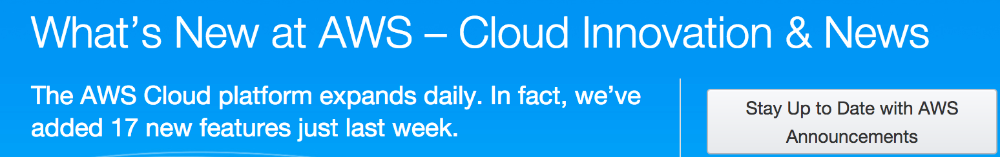
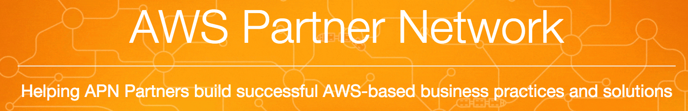
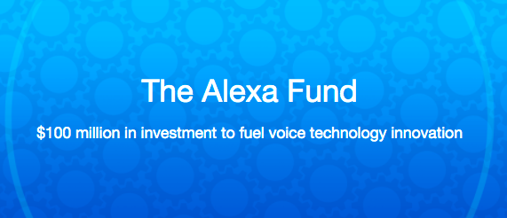

$ whoami
full-stack software developer
technologist with passions
cloud computing expert
20+ years of software development experience
"In-depth expertise in Google’s core technologies,
cloud computing, DevOps,
and Amazon’s AWS services"
"Led some of the Huawei’s efforts in
open-source communities including code contribution,
collaborations, community events,
and ecosystem development. "
dshao $

|

Head of US Innovation Center
Global Technical Services

全球技术服务部
美国能力中心主任
|
IoT
- Market analysis, and use cases in smart home and connected car
- PoC on Alexa-stlye AI-enabled IoT platform
- Joint innovation IoT project with SJSU, San Jose, GE Digital
Cloud Infra and NFV Integration
- Application orchestration for Cloud Management Platform
- Multi-vendor Cloud OS deployment automation
- Open-O, and OPNFV community engagment, and integration
- Advanced data center visualization
stack360
(Infrastructure) Deploymentment As A Service
Compass
An Open Source Project for
Data Center and OPNFV Deployment

Active in OpenStack, and OPNFV communities.
Infrastructure Networking
- Worked on Protocol Buffer and Stubby RPC library, and other internal infrastructure
- Google later releases as open source ProtoBuf and gRpc
- A data prediction/anomaly detection services for internal use
Google Apps(Now G Suite)
- Google Apps(Gmail, and calendar) for enterprise and ISPs. Worked on authentication, email migration, email dual-delivery, Gmail 3rd-party accounts, etc.
- SAML authentiation with 3-rd party
- GData APIs for Google Apps resellers.
Call Manager Security
- Design of sRTP support, and strategy for sRTP key management.
- Standards in SIP security
- Tools for monitoring/debugging for encrypted signaling and media.
- Work with STG (Security Technology Group) on strategy for support of voice protocols. NAT traversal, and inspection of encrypted signaling.
Data Center Management
- Worked on management appliances for Data Center Management (content networking and security).
- Worked with IBM on strategic integration for data center solutions.
- Worked with STG (Security Technology Group) on management interface, control pane virtualization for Cisco's next-generation L4-L7 products (load balancer, SSL acceleration, and firewall etc).
What Can I Do for Tencent?
Public Cloud is the Future
Dramatic growths predicted for coming years.
More than $1 trillion in IT spending will be directly or indirectly affected by the shift to cloud during the next five years, according to a recent Gartner estimate.
Microsoft’s commercial cloud run rate tops $14B for first time, driven by Azure and Office 365
Jan. 26, 2017.
Microsoft's fastest growing business.
AliCloud’s revenue to hit US$8.72 billion by 2020
says Morgan Stanley
Critical for Tencent
- Public cloud services will be dominated by regional leaders
- Winner-take-all in public cloud market
- AliCloud is the projected leader in China
Public cloud service is strategically important for Tencent.
Why Is AWS Successful
Rich functionality and rapid pace of innovation

Why Is AWS Successful
Partners and customer ecosystem

Ecosystem is Key
AWS has been very successful in developing a healthy
ecosystem
A Case Study - Alexa


6 million devices in 2016, 24 million predicted in 2017
Alexa
- A clear winner in CES 2017: major IoT players showcased integrations with Alexa
- Alexa Voice Services (AVS)
- Alexa Custom Skills
- Integrated with Amazon's Lambda services
- Alexa is the open consumer AI platform

announced on January 16, 2017
Will elevate the ecosystem to a new level
Possible Work for Tencent
- Help on cloud services partnership and ecosystem
- Develop APIs, SDKs, and service integrations
- Develop US-based outreach to startups and partners
- University research collaboration
- Focus on some verticals, eg. IoT, AI, etc
Thank You!
http://weidongshao.github.io/
weidongshao @ gmail
+1 (408) 463-6805